- Urmila Shrawankar and Vilas Thakare, "Techniques for Feature Extraction in Speech Recognition System: A Comparative Study", International Journal of Computer Applications in Engineering, Technology and Sciences (IJCAETS), pp. 412-418, 2010.
- Selina Chu, Shrikanth Narayanan, and CC Jay Kuo, “Environmental sound recognition with time–frequency audio features,” IEEE Transactions on Audio, Speech, and Language Processing,vol. 17, no. 6, pp. 1142–1158, 2009.
- K. J. Piczak, “Environmental sound classification with convolutional neural networks,” in 25th International Workshop on Machine Learning for Signal Processing (MLSP), Boston, MA, USA, Sep. 2015, pp. 1–6
URBAN ENVIRONMENT AUDIO CLASSIFICATION
Abstract
The goal of this project is to build an audio classifier capable of recognising different sounds. The sounds we have used are ambient noises from an urban environment. Right now we have focused on 4 categories of sounds. This can prove to be a very effective tool for audio surviellance of the sorrounding. It's applications can vary from as simple as making a device to detect a dog's bark to as big as detection of gun shots/bombing or other terrorist activities. We tried plotting different types of spectrograms of samples from each class which inturn lead us to see what filters would be best suited for this classification. In the end we used Mel-frequency cepstral coefficients, Mel-scaled power spectrogram, Chromagram of a short-time Fourier transform, Octave-based spectral contrast, Tonnetz to extract features. The coeffecients from these filters led to 193 features which were then used for classification using Machine Learning.
1. Introduction
As mentioned, the goal of this project is to build an audio classifier capable of recognising different sounds that are heard in our environment. In this section, I would introduce you to the problem statement and the try to explain the challenges it posed, then present some litreature survey that we did and lastly explaining the approach that we decieded to take for solving this problem.
1.1 Introduction to Problem
The crux of the problem is this: given a never-before-heard recording, how can a system be trained to identify what it is actually listening to?
Let’s try to refine this problem. The input format will be the digital representation of the original analogue waveforms, just as would be recorded by a microphone, encoded using pulse-code modulation and stored as (lossless) WAV files.
From this input, we’ll need to extract features. But sound recordings are not spreadsheets, with their data neatly organised into rows and columns of known significance. Say we sample two recordings of equal duration, creating 2000 discrete floating point numbers; we can not meaningfully compare the 1000th number of one recording with the 1000th number of another. This is because we have no way of telling whether the number at any particular point in time is signal, silence or noise. Instead, we must abstract away from individual numbers, and consider data values in the context of many of its neighbours. This will grant us the ability to start spotting patterns which we call features, and permit us to generalise - the fundamental requirement in machine learning.
The challenge then, is to find measurable properties that differ in dissimilar recordings and are alike in those from similar sources. The complexity of feature extraction makes this problem an attractive application of deep learning, whose hierarchical nature makes it capable of automated feature learning. Once features have somehow been extracted, the question becomes how can we use them to train a model, and then use what we’ve learned to generate predictions?
Next, we’ll want to tune the model produced, to achieve the best possible accuracy. So we’ll need to consider how we can measure successful classification - and how can the performance of the model be optimised. Putting all this together suggests a processing pipeline as shown in Fig 1.
1.2 Figure
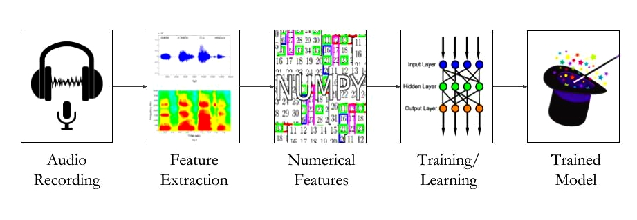 Fig. 1: An overview block diagram of the project.
1.3 Literature Review
1.4 Proposed Approach Idea
Here is the crude basic idea:
- Using different frequency scales, explore spectrograms.
- Using this, determine what filter banks are ideal for the purpose
- Use these filter banks to generate features
- Use algorithmic training and these features to automate classifier design
- Done. Now test this on new data to calculate efficiency.
1. Proposed Approach
In this section we explain the proposed approach of the enitre project in detail. Part 1.1 about exploration is not quite a part of 'how we solve this problem' but a very integral part of 'how we decide how to solve this problem' so we decide to include it.
2.1 Exploratory
Once in memory, a common visualisation for audio recordings is the waveform plot, which depicts the amplitude (relative loudness) of the sound at each successive time interval, this is what you'll see if you load an audio file into a sound editor like Audacity. Here are the waveforms for a randomly chosen example of each of the dataset’s 4 classes:
Fig 2: Amplitude vs. Time plot for sample files from all four categories.
Fig 3: Spectrogram of sample files from all four categories.
In these plots, time is on the horizontal axis and amplitude on the vertical. We can see that some of the samples, like a dog barking, have a shape that is distinctively different from the others, which our classifier might be able to utilise to distinguish between them. Others like air-conditioning and engine idling are superficially more similar, and might be more difficult to tell apart - even for a human listener.
Matplotlib provides an alternative visualisation method called spectrogram that calculates and plots the different intensities of the frequency spectrum. This creates a different depiction of each sound:
Visually, it seems slightly easier to distinguish between the different classes with this visualisation, and indeed the intensities of frequencies will be the basis of the features I intend to extract. The notebook contains a variation of this visualisation using Librosa’s log power spectrogram plotting.
Following are visualizations of other features in the order air conditioner, car horn, street music and children playing.
air conditioner 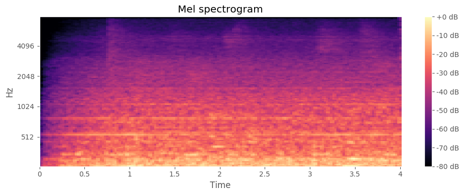
car horn 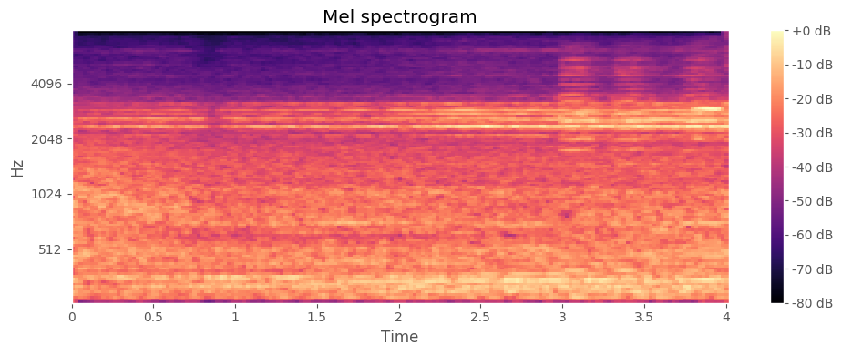
street music 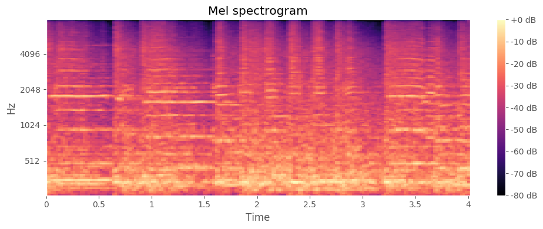
children playing 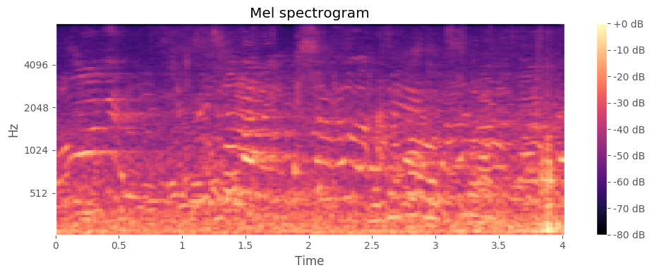
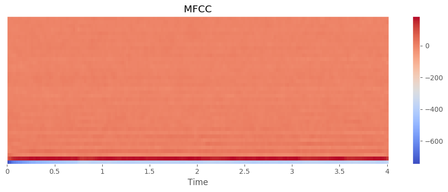
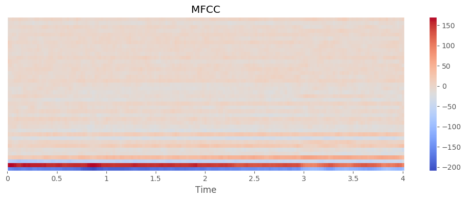

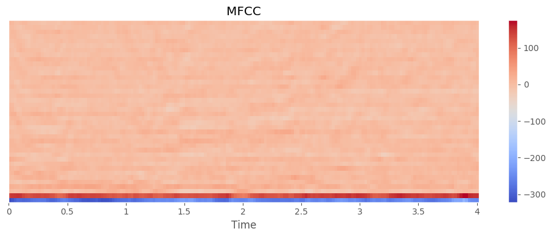
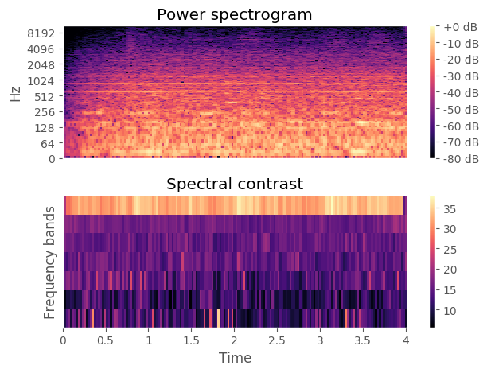
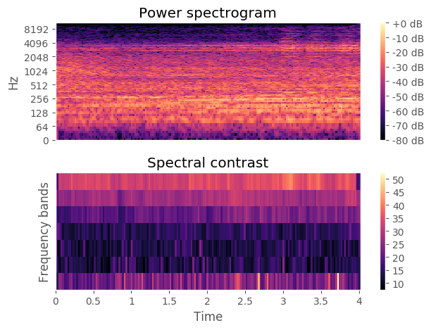
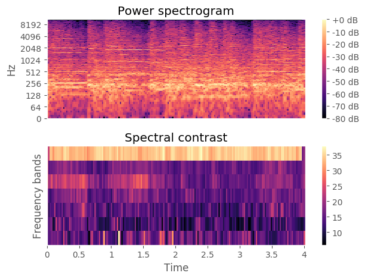
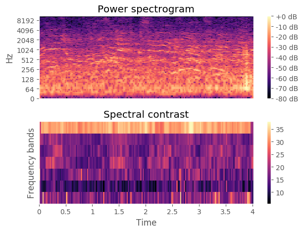
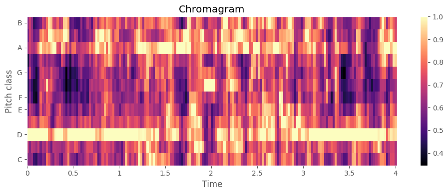
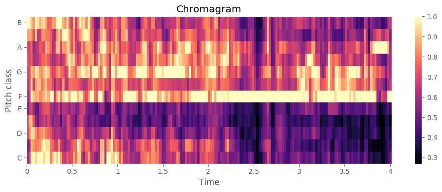
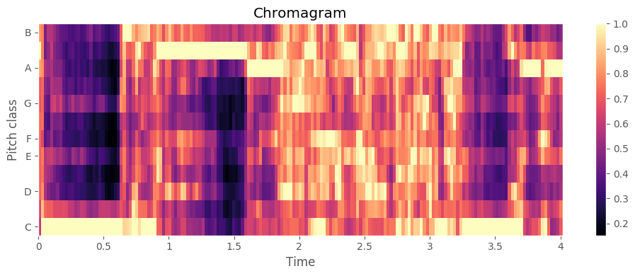
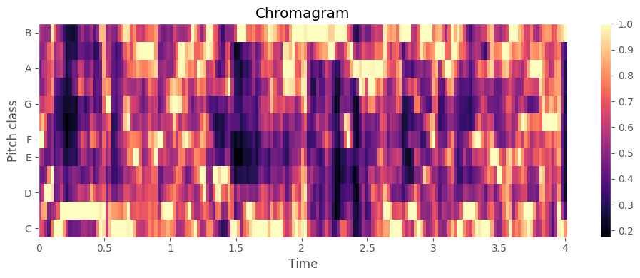
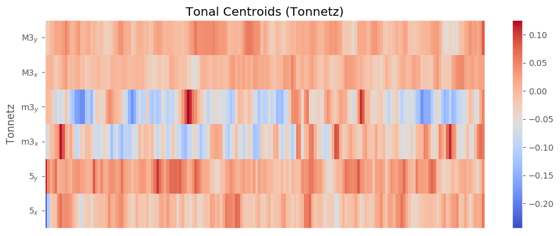
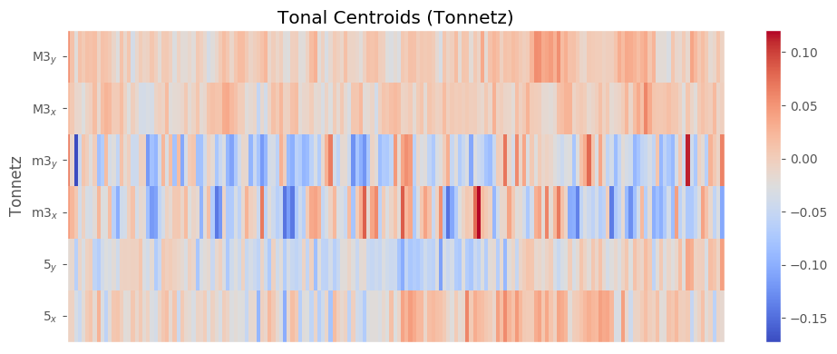
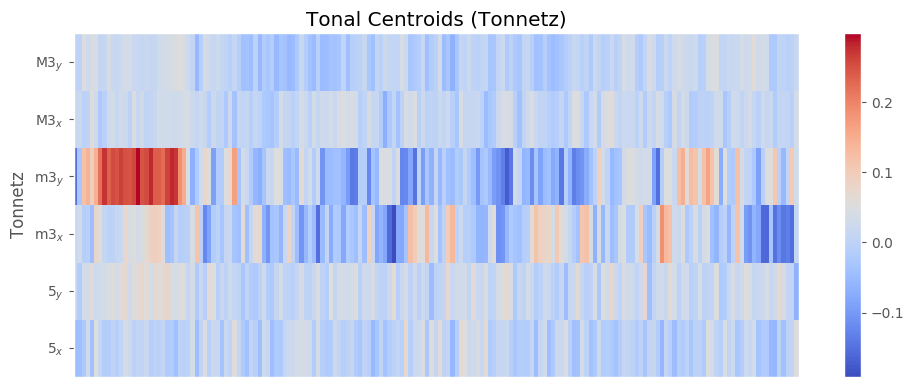
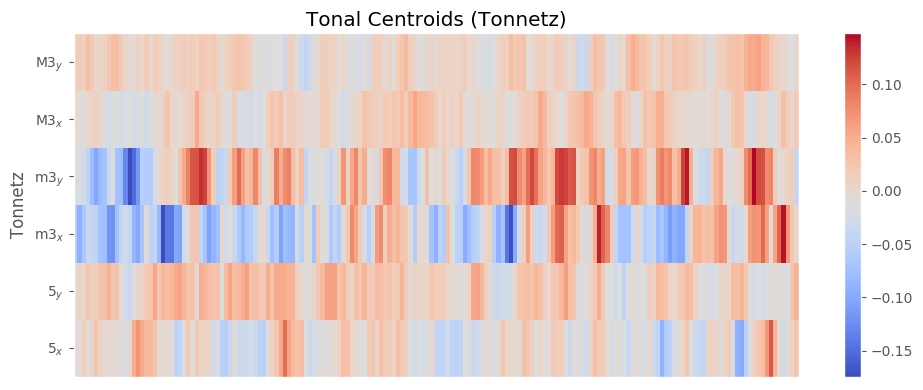
These plots illustrate the complexity of the data we need to process. In typical supervised learning projects, every example in the training set has the same features, providing comparable values. But this is not the case with media such as audio or images, because any two files will not contain a pair of values that are semantically equivalent. Even if two audio samples had the same size, we can’t meaningfully compare the respective value at an arbitrary point in time. It would be like an image classifier trying to distinguish between two photos by comparing the pixels found in each at the same arbitrary location.
Consequently, in audio processing we can not consider each data value in isolation, and can not determine what is signal and what is noise merely by looking at the quantiles of a frequency distribution. Instead, the salient information is the patterns of values, spread over wide regions of the recording. This means we must consider how the signal changes over time, and what patterns can be identified. How this can be achieved will be discussed in section 2.3.
2.2 Feature extraction
The classification model will be fed with features extracted from our audio dataset, based on which it will be trained to make a decision.All of the audio clips collected have different sampling rates. The librosa library that we used uniformly samples the clips at a frequency of 22KHz. This means that in the time domain, each second of each audio clip input has 22,000 data points. We cannot directly feed this data to train our model, because there may be many redundant features here which will harm our model's accuracy.
So we extract typical frequency domain features from these clips. We selected the features to be used here based on the results of similar studies published in the past (check the literature review section). The features we used are-
- Mel-frequency cepstral coefficients (MFCC) - the coefficients that collectively make up the short-term power spectrum of a sound The difference between the cepstrum and the mel-frequency cepstrum is that in the MFC, the frequency bands are equally spaced on the mel scale, which approximates the human auditory system's response more closely than the linearly-spaced frequency bands used in the normal cepstrum. This frequency warping can allow for better representation of sound, for example, in audio compression.
- Take the Fourier transform of (a windowed excerpt of) a signal.
- Map the powers of the spectrum obtained above onto the mel scale, using triangular overlapping windows.
- Take the logs of the powers at each of the mel frequencies.
- Take the discrete cosine transform of the list of mel log powers, as if it were a signal.
- The MFCCs are the amplitudes of the resulting spectrum.
- Short term fourier transform is a very effective and generic tool that can be used to analyze a signal. In normal Fourier Tranform we take the entire time domain representation of a signal and observe its frequency domain representation. This tells us what frequency components are present in the signal. But in practical cases we often get signals that are largely varying over time. For such signals, we not only need to understand what frequency componenets are present in the signla, but how these frequency components are distributed over time for effective analysis. Thus we essentially need a mapping in frequency as well as time domain. In such a situation we break down the signal into small overlapping time frames, using a window function. By varying the window width we can ensure that the signal isnt varying heavily within it. Then we take a finite point fourier transform for the data points in these time frames. Thus, we get fourier domain representations for short durations of time.
The frame wise fourier transform that we obtain is then used to derive the signal intensity as a function of frequency and time. But, rather than plotting it on a linear frequency scale as we do in a normal spectrogram, we use a logarithmic frequency scale where the frequencies increase at an order of 2. Further, two consecutive frequencies separated by an order of two are further divided into 12 frequency bins and the intensity is then plotted for each bin. This frequency scale is known as the chroma scale and the resultant spectrogram that we plot is known as the chromagram. in our feature extraction we derived the stft-based chroma features for each audio clip and then then we take a mean of all the chroma features along the time axis and we get a resultant numpy array of 12 chroma features describing each audio file.


- Mel-scaled power spectrogram - the Mel Scale is used to provide greater resolution for more informative (lower) frequencies
- Chromagram of a short-time Fourier transform - projects into bins representing the 12 distinct semitones (or chroma) of the musical octave
- Octave-based spectral contrast - distributions of sound energy over octave frequencies
- Tonnetz - estimates tonal centroids as coordinates in a six-dimensional interval space
MFCCs are commonly derived as follows:
These featues were extracted using the librosa library in python and were stored as numpy arrays. These arrays were then separately used to train our Feed-Forward Neural Network(FFN) model to classify the audio.
2.3 Training
The fundamental task in creating a training algorithm is the creation of a model that represents the complex relationships between features and predictions. The resulting model would ultimately be used to generate predictions. There are two distinct approaches to model creation: Data Modelling and Algorithmic Modelling.
Data Modelling relies on human expertise to design and refine models, using tools like statistics to provide the insights that boost its predictive power but this approach becomes over-complicated when the number of features is too large. Algorithmic Modelling, on the other hand, involves letting data speak for itself, so a model is built by trial and error.
With a few exceptions (like decision trees), the limitation of the algorithmic approach, particularly when it comes to neural networks, is the model is a “black box”, where the relationships between input and output become highly complex and difficult to understand. But as we no longer need to intuitively understand the data, high dimensionality comes to be considered as a source of value rather than a curse, making this approach well-suited to tasks like image and audio processing. Consequently, for this project, it was clear the best choice was to build the classification model algorithmically, using a deep neural network (one with multiple stacked layers) that would be capable of automatic feature learning. The neural network we used was Feed-Forward Network (FFN), a simple deep neural net with a few hidden layers.
We started by creating a feed-forward neural network using the Keras Sequential Model, consisting of an input layer, a densely connected hidden layer, both using relu activation (a ramping function that swaps negative values for zeroes, ensuring weights don’t get too big or too small), and an output layer with a softmax activation function. The starting weights of the network nodes were initialised by assigning random values drawn from a normal distribution with a mean of zero. As this was a multi-class classification problem, we specified the categorical_crossentropy loss function. This is the measure that allows mistakes in the network’s output to be evaluated. This is vital to the training process, as it allows the network to learn when its output is decisively wrong - without it, the network would not know when it is making mistakes. As the learning rate is determined by the error in the output, the slope of the loss curve will be much steeper initially than a quadratic cost function. This is beneficial when the neuron starts out badly wrong, and helps prevent the search from getting stuck in local minima when the neuron needs to learn fastest. When the model is trained over several successive training epochs, the console output shows how the training set loss decreases, whilst the accuracy increases - indicating that the model is learning. But we don't want the model to simply memorise the training data and not have the capability to generalise to examples it hasn't seen before. So we added a stopping function that would evaluate a separate measure of loss against an unseen validation set, which allows training to be halted at the point when the model begins to overfit and lose its ability to generalise. Another tactic I employed to prevent overfitting was to include a dropout policy between the final two hidden layers. we used a value of 0.5, meaning there’d be a 50% chance that any neuron's activation output will be ignored and not propagated to its downstream connections, (and so it would not have its weights updated on the backward pass). The idea is that this random throwing away of information helps prevent the network from learning simple spurious dependencies, and promotes the creation of complex co-adaptations between neurons of the hidden layers. By encouraging multiple neurons to become involved in learning, they can learn on behalf of ‘missing’ neurons, resulting in the creation of multiple independent internal representations by different groupings of neurons across the network.
Another implementation decision was the choice of optimiser, which we have computed using the code in the file ‘optimiser.py’.
Code Run: